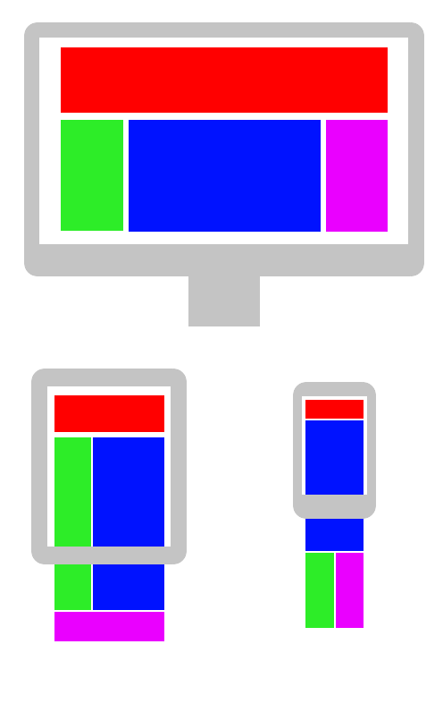
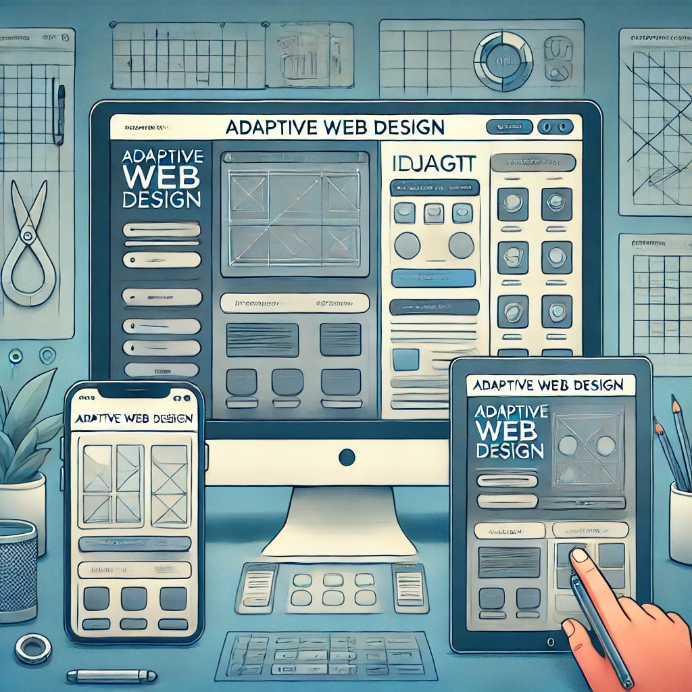

第7-8週：RWD 與 Media Query
圖片、響應式設計、變數
圖片
傳統寫法
<img src="...">
多解析度圖片
<picture>
<source srcset="image-large.jpg" media="(min-width: 800px)">
<source srcset="image-medium.jpg" media="(min-width: 500px)">
<img src="image-small.jpg" alt="多解析度圖片">
</picture>
RWD 與 AWD
RWD (Responsive Web Design)

回應式網頁設計
- 同一個內容，自動因應不同設備、寬度將網頁版面作變化
- 基於 media query
- 只需要更改同樣的內容，就可使全設備、版面都可以變化
AWD (Adaptive Web Design)

- 自動判斷設備，導入針對不同設備所製作的網頁
- 同時必須針對不同設備進行不同版面設計
- 與 RWD 不同，AWD 為每種設備提供完全不同的網站版本
Media Query
@media .....
方向偵測
@media (orientation: landscape) { }
@media (orientation: portrait) { }
寬度偵測
@media (max-width: 768px) { }
@media (min-width: 768px) { }
實務範例
.navbar {
display: block;
}
@media (max-width: 768px) {
.navbar {
display: none; /* 當螢幕寬度小於 768px 時隱藏導航欄 */
}
}
列印媒體
@media print {
nav {
display: none; /* 列印時 nav 元素不出現 */
}
}
CSS 變數
--xxx-xxxxx: <值>;
--main-color: #0a0a0a;
好處：容易維護，可以不用大海撈針改屬性。
部分宣告
nav {
--main-color: #595758;
background: var(--main-color);
}
section {
background: var(--main-color);
/* 無效，因為只在 nav 中宣告，僅適用 nav */
}
全域宣告
:root {
--main-color: #FFEEF2;
--second-color: #FF92C2;
}
nav {
background: var(--main-color);
}
main {
background: var(--second-color);
}
如果變數不存在
:root {
--main-color: #FFE4F3;
}
main {
background: var(--main-color);
color: var(--text-color, black); /* 未宣告變數即用後面 fallback 值 (black) */
}
變數配合 Media Query
:root {
--main-color: #E6AA68;
--secondary-color: #7FB069;
}
nav {
background: var(--main-color);
}
@media (max-width: 768px) {
nav {
background: var(--secondary-color);
}
}
實務工具
https://responsively.app/ - 響應式設計測試工具